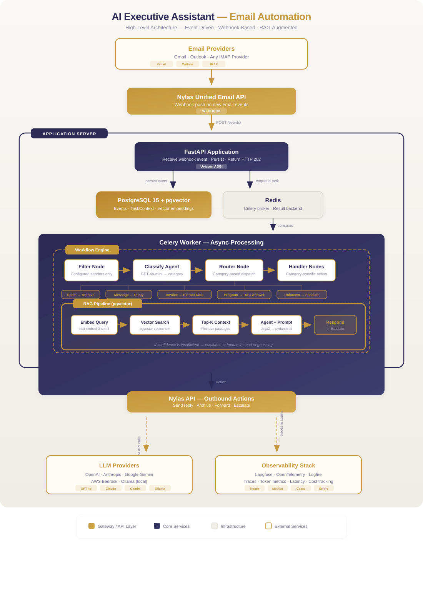

AI Executive Assistant — Intelligent Email Automation Platform
Project Context
This project was built as an independent initiative — a real-world productivity tool and a reference implementation for teams learning to build production AI systems.
Project Summary
Type: Personal / Independent Project Duration: 2025 – 2026 Role: AI Engineer (Solo)
Key Outcomes:
- Fully autonomous email triage — no human in the loop for routine messages
- Custom node-based workflow engine powering composable AI pipelines
- RAG pipeline with hallucination prevention via vector-grounded responses
- Multi-provider LLM support (OpenAI, Claude, Gemini, Bedrock, Ollama) with one-line config swap
- Full observability via OpenTelemetry and Langfuse tracing
Challenge
Professionals and entrepreneurs spend an enormous amount of time managing email — triaging, categorizing, responding, and escalating. Inspired by Dan Martell's Buy Back Your Time, the challenge was to build an AI system that could autonomously monitor an inbox, understand the intent of each email, and take the right action — all without manual intervention.
The core difficulty: email is unstructured, highly variable, and context-dependent. A naive rule-based system would break constantly. The solution needed to be intelligent, reliable, and extensible enough to grow with new use cases.
Approach
The platform is a production-grade, event-driven AI automation system built from scratch — not a wrapper around an existing tool, but a proper distributed system with a custom workflow engine at its core.
1. Webhook-driven async ingestion
The FastAPI endpoint receives email events via Nylas webhooks (supporting both Gmail and Outlook), persists the raw event to PostgreSQL, and enqueues a Celery task — all within milliseconds. The caller receives HTTP 202 immediately. All AI processing happens asynchronously via Celery workers backed by Redis as the message broker. The API stays non-blocking regardless of LLM response times.
2. Custom node-based workflow engine
Rather than hard-coding logic, the platform uses a declarative, node-based workflow engine. Each workflow is defined as a schema of chained nodes that can be composed and extended:
- AgentNodes — LLM-powered steps (classify, analyze, compose responses)
- RouterNodes — conditional branching based on prior node output
- ParallelNodes — concurrent execution for independent steps
A shared TaskContext object flows through the entire pipeline, letting every node read from and write to a single source of truth.
3. Email processing pipeline
The live workflow processes every incoming email through four stages:
- Filter — only process emails from configured senders
- Classify — GPT-4o-mini categorizes each email: SPAM, MESSAGE, INVOICE, PROGRAM_QUERY, or OTHER
- Route — a router node dispatches to the appropriate handler based on classification
- Handle — category-specific nodes take action: spam is archived, messages get auto-replies, invoices have attachments downloaded and data extracted via Docling, and program queries are answered via the RAG pipeline
4. RAG pipeline for vector-grounded responses
For program-related queries, the AI agent does not hallucinate — it performs a semantic similarity search over a PostgreSQL vector store (pgvector) populated with program transcripts and documentation. If confidence is insufficient, the system escalates to a human instead of guessing. Embeddings are generated using OpenAI text-embedding-3-small (1536-dim).
5. Full observability built-in
Every workflow execution is traced via OpenTelemetry and Langfuse, giving full visibility into LLM inputs/outputs, token counts, latency, costs, and decision paths. Every node becomes a span in the trace tree, making debugging and systematic improvement possible.
Results & Impact
- Fully autonomous email triage — no human in the loop for routine messages
- Intelligent escalation — AI knows when it cannot answer and routes to a human rather than hallucinating
- Zero-latency webhook response — HTTP 202 returned immediately; all processing is deferred asynchronously
- Multi-provider flexibility — the same workflow runs on OpenAI, Anthropic Claude, Google Gemini, AWS Bedrock, or local Ollama models with a one-line config change
- Extensible by design — new email categories, new workflows, and new integrations (calendar, Slack) can be added without touching core engine code
Solution Overview

End-to-end event-driven architecture: webhook ingestion, async processing, AI workflow engine, and action execution
Tech Stack
- Python 3.13 — core language
- FastAPI — REST API and webhook receiver
- Celery 5 + Redis — async distributed task queue
- SQLAlchemy + Alembic — ORM and database migrations
- Pydantic v2 — data validation throughout
- PydanticAI — multi-provider LLM agent framework
- OpenAI GPT-4o / GPT-4o-mini — primary LLM providers
- Anthropic Claude / Google Gemini / AWS Bedrock / Ollama — supported via PydanticAI
- PostgreSQL 15 + pgvector — primary database and vector similarity search for RAG
- Nylas API — unified email and calendar abstraction layer
- Docling — document and attachment parsing
- Langfuse + OpenTelemetry + Logfire — LLM tracing, distributed tracing, structured logging
- Docker + Docker Compose — full containerized deployment
- Jinja2 + python-frontmatter — templated system prompts with metadata management
Additional Context
- Timeline: Ongoing personal project (2025–present)
- Role: AI Engineer (solo — architecture, implementation, deployment)
- Focus: Production-grade reliability, not just prototyping
- The architecture was intentionally designed to demonstrate enterprise-grade patterns — event-driven async processing, RAG with hallucination prevention, multi-provider LLM abstraction, and full observability — in a domain every professional immediately understands
- The codebase is built for extensibility: adding a new email category requires only a new node class and a one-line registry entry. The same workflow engine can power calendar automation, Slack triage, or any other event-driven use case
-
Interested in similar work?
I'd love to discuss how an AI automation platform could work for your team's workflows.